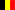
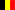

Hello!
You are about to install the b2evolution multilingual multiuser multiblog engine. You can learn more about b2evolution by visiting b2evolution.net .
Below are some quick instructions designed to help you. Please pick your prefered language and read on...
Current language: English (GB) · change:


 


Quickstart instructions
If you don't have a webserver yet, check out our selection of recommended web hosting companies which offer easy, automated install of b2evolution.
If you already have a PHP/MySQL webserver, you can set up this copy of b2evolution in just a few minutes. Just follow the instructions matching your situation:
Beta software
This is an ALPHA / BETA release!
There are still bugs we know of, but we consider the software is globally operational! The most important thing you need to know about ALPHA / BETA releases is that nothing is to be considered final, including skintags and the plugin API.
NOTE: This version is and will continue to be fully supported in the upgrading scheme and procedures.